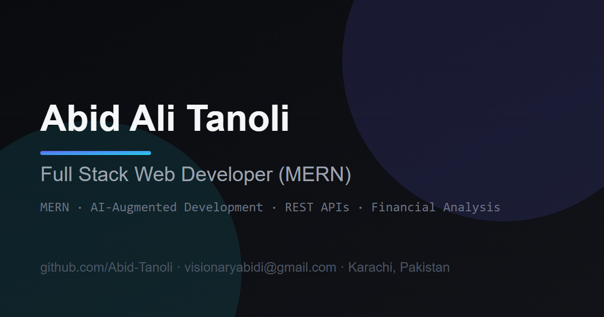

Overview
Professional Summary
Full Stack Web Developer with hands-on MERN expertise (MongoDB, Express.js, React.js, Node.js)
and a growing specialization in AI-augmented development — integrating tools such as Antigravity,
OpenAI Codex, Qwen, and OpenCode into real production workflows. Currently an intern at Bano Qabil
Incubation Center, building BQ-PLAY, a live cricket scoring platform with real-time updates.
A complementary 10+ year background in Accounting & Finance — including receivable management
supervision at AK Electronics — brings analytical rigor, structured problem-solving, and financial
reporting discipline to every engineering decision.
Background
About Me
I'm a Full Stack Web Developer with hands-on MERN expertise — MongoDB, Express.js, React.js, and Node.js — and a fast-growing specialization in AI-augmented development. I integrate modern AI coding tools (Antigravity, OpenAI Codex, Qwen, OpenCode) directly into my workflow to design, build, and debug features faster without compromising quality.
I'm currently an intern at Bano Qabil Incubation Center, where I'm building BQ-PLAY — a live cricket scoring platform with real-time updates, an admin scoring console, and player statistics. I work in an agile team with Git/GitHub, design REST APIs and MongoDB schemas, and ship responsive React frontends end-to-end.
What sets me apart: 8+ years of professional experience in Accounting & Finance. I've built financial MIS dashboards, managed receivables across South Pakistan, and filed tax reports — so I bring analytical rigor, structured problem-solving, and a business mindset to every engineering decision.
Where I'm Headed
I'm on a trajectory from full stack development to AI-augmented engineering: building tools that combine the MERN stack with AI agents, prompt-driven workflows, and real-time systems — while keeping the financial discipline and analytical rigor I've carried from a decade in accounting.
Expertise
Skills
Frontend
Building responsive, accessible interfaces
HTML5 & CSS3JavaScript (ES6+)React.js
React Hooks & Context APITailwind CSSResponsive / Mobile-First Design
Backend & Database
APIs, auth, and data modeling
Node.jsExpress.jsMongoDB & Mongoose
JWT / Session AuthREST API DesignThird-Party IntegrationsSocket.IO
AI-Augmented Development
Shipping faster with AI agents in the loop
AntigravityOpenAI CodexQwen
OpenCodePrompt EngineeringAI Agent Workflows
Deployment & DevOps
From localhost to production
VercelRailwayGitHub Actions
Environment ManagementServerless Patterns
Tools & Workflow
The daily toolkit
Git & GitHubVS CodePostman
npmAgile CollaborationPlaywright
Career
Experience
Full Stack Web Development Intern — Bano Qabil Incubation Center
Apr 2025 – Present
Building production MERN applications in an agile team — from schema design to deployment.
- Built and deployed BQ-PLAY, a live cricket scoring platform with real-time updates (MERN + Socket.IO)
- Designing REST APIs and MongoDB schemas for a 20+ route, 22-model backend
- Integrating AI coding tools (Antigravity, Codex, Qwen, OpenCode) into daily workflows
- Shipping responsive React frontends and collaborating via Git/GitHub in agile sprints
Accountant | Receivable Management Supervision — AK Electronics
Nov 2018 – Present
Own full-cycle accounting and supervise receivable management — analytical rigor applied daily.
- Supervise receivable management, client reconciliation, and collection follow-up
- Prepare daily cash flow reports, general ledgers, and tax compliance filings
- Manage monthly balance reconciliations and client account management
- Build financial MIS reports and dashboards for senior management decision-making
Receivable Management Supervisor — Digicom QMobile (Pvt) Ltd
Mar 2014 – Nov 2017
Led receivables reconciliation across South Pakistan — large-scale data accuracy under deadlines.
- Reconciled receivables across South Pakistan; produced DBC reports and sales-vs-return analysis
- Maintained Oracle ERP updates; built MIS reports and financial dashboards
Data Compilation Officer — Engro Fertilizers (Rahbar Project)
Apr 2018 – Jul 2018
Ensured data integrity for a farmer-verification program.
- Verified farmer documents and land status records
- Maintained data integrity and compliance across the program database
Work
Projects Overview
BQ-PLAY (CricAll) Live
Live cricket scoring & tournament platform
Flagship full-stack project — real-time cricket scoring with public user app, admin scoring console, and Socket.IO backend. AI commentary via Anthropic Claude.
LowPriceMart In Progress
Full-stack e-commerce platform
Three-tier e-commerce: customer storefront, admin dashboard with Recharts analytics, JWT auth, Cloudinary uploads, Playwright e2e suite.
Event Organizer Needs Verification
Event booking & management platform (TypeScript)
Full-stack TypeScript platform with JWT auth, event/category modules, and Vercel serverless-ready API.
Tourist Places Guide In Progress
MERN travel guide with user & admin apps
ECommerce (Learning) Archived
Self-learning e-commerce build — foundation for LowPriceMart
Web-3 Bano Qabil Backend Archived
Backend coursework — Node.js, Express, MongoDB in TypeScript
Web-2 Bano Qabil Archived
JavaScript fundamentals & assignments
Web Dev 1 — Final & Mid-Term Archived
Bano Qabil web development coursework — HTML/CSS foundations
Deep Dive
Project Details
BQ-PLAY (CricAll) — Live Cricket Scoring Platform

My flagship full-stack project at Bano Qabil Incubation Center. A live cricket scoring and tournament platform with a public user app (match center, live scores, rankings, points tables, news, videos), a dedicated admin scoring console (ball-by-ball scoring, wagon wheel, pitch maps, DRS review, super-over and tie resolution), and a Node/Express + Socket.IO backend.
Key Features:
- Real-time score updates via Socket.IO (WebSocket) across user and admin apps
- Ball-by-ball live scoring console with full match setup wizard (format, XI, toss, openers)
- AI-powered commentary generation through Anthropic Claude
- Match detail pages: Live, Scorecard, Commentary, Partnerships, Graphs, Info tabs
- Series/tournaments, team & player profiles, rankings and points tables
- 22 MongoDB models and 20+ REST route groups on the backend
- Dark/light theme toggle in both frontends
Tech Stack: React, Redux Toolkit, React Query, Socket.IO, Node.js, Express, MongoDB, Tailwind CSS, Anthropic Claude API
LowPriceMart — Full-Stack E-Commerce
A complete three-tier e-commerce application: a customer storefront, a separate admin dashboard with sales analytics (Recharts), and a Node.js/Express backend with MongoDB. Authentication via JWT, image uploads via Cloudinary, transactional emails via Nodemailer, and Zod validation on every input — plus an end-to-end Playwright test suite.
- Separate user and admin React frontends with Redux Toolkit state management
- Admin analytics dashboard with charts (Recharts)
- JWT authentication, Cloudinary image uploads, Nodemailer email flows
- Zod validation across the full stack
- Playwright end-to-end test suite
Tech Stack: React, Vite, Tailwind CSS, shadcn/ui, Redux Toolkit, Recharts, Node.js, Express, MongoDB, JWT, Cloudinary, Nodemailer, Zod, Playwright
Event Organizer — Event Booking & Management Platform
A full-stack event booking and management platform built with React, TypeScript, Node.js, Express, and MongoDB. Feature modules for authentication, users, admins, events, and categories with JWT auth, a Vercel serverless entry point for the API, and a clean layered project structure.
- Auth module: register, login, JWT sessions
- User, admin, event, and category management modules
- TypeScript across backend and frontend
- Vercel serverless-ready API entry point
Tech Stack: React, TypeScript, Node.js, Express, MongoDB, JWT, Vercel
Tourist Places Guide — MERN Travel Guide
A MERN-stack tourist places guide with separate user and admin React (Vite) frontends connected to a Node.js, Express.js, MongoDB, and Mongoose backend. Covers full CRUD flows for places and categories with environment-based configuration.
Tech Stack: React, Vite, Node.js, Express, MongoDB, Mongoose
Stack
Technologies
Technologies used across portfolio projects and professional workflows:
ReactTypeScriptJavaScript
Node.jsExpress.jsMongoDB
MongooseSocket.IORedux Toolkit
React QueryTailwind CSSshadcn/ui
ViteJWTREST APIs
CloudinaryNodemailerZod
PlaywrightRechartsAnthropic Claude API
VercelRailwayGitHub Actions
Git & GitHubPostmanHTML5
CSS3Oracle ERPAntigravity
OpenAI CodexQwenOpenCode
Language Distribution (GitHub Repositories)
■ JavaScript 45%■ TypeScript 25%■ CSS 15%■ HTML 10%■ Other 5%
Academics
Education
B.Com (Bachelor of Commerce) — University of Karachi
In Progress
Continuing part-time alongside full-time engineering work.
Intermediate (Pre-Medical) — Crescent Degree College, Karachi
Completed
Open Source
GitHub Profile
Active GitHub developer since June 2024 with 13 public repositories spanning full-stack MERN applications, TypeScript backends, and coursework.
Top Repositories
BQ-PLAYJavaScript · Live cricket scoring platform
LowPriceMartJavaScript · Full-stack e-commerce
Event-OrganizerTypeScript · Event booking platform
portfolioTypeScript · This portfolio site
Web-3-Bano-Qabil-BackendTypeScript · Backend coursework
tourist-places-guideJavaScript · MERN travel guide
CV
Resume Information
Format: ATS-friendly, single-column resume optimized for recruiters and applicant tracking systems.
Current Title: Full Stack Web Developer (MERN) | AI-Augmented Development | Accountant & Receivable Management
Current Role at AK Electronics: Accountant | Receivable Management Supervision (Nov 2018 – Present)
Includes: Professional summary, skills, experience (tech + finance), featured projects, education, and certifications.
Availability: Open to freelance work, collaborations, and full-time engineering roles. Based in Karachi, Pakistan — available for remote and hybrid opportunities.